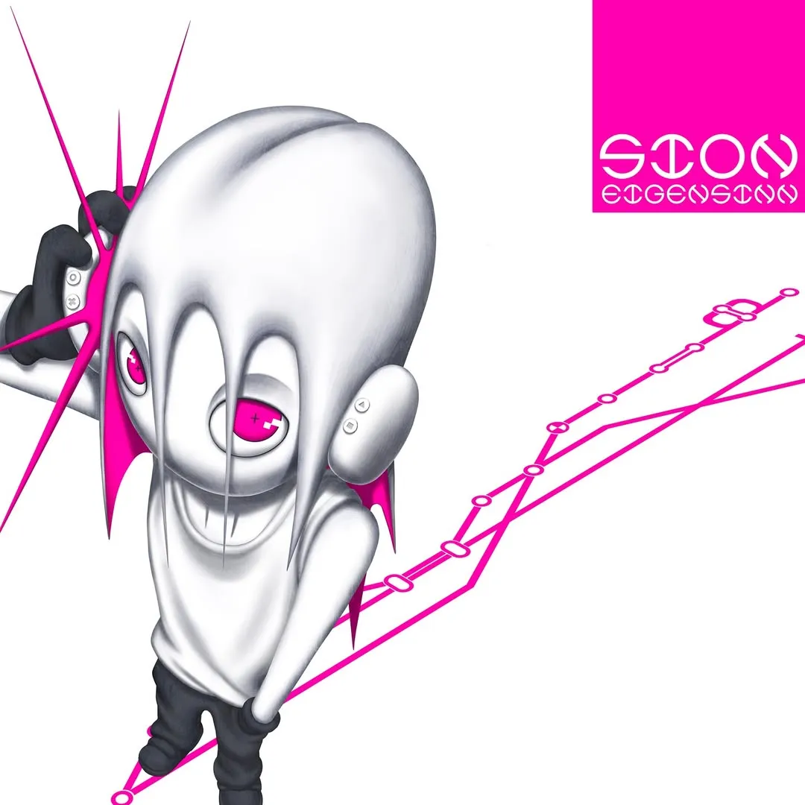

explores the psyche of a generation shaped by an oversaturation of media and algorithms .It is a profound look at self-identity and a critique of our distorted times, capturing the nostalgia, confusion, and sensory overload of the modern world
Tracklist
- celeste
- holdon
- avoid2
- homes
- borocca
lyrics
I won it I won‘t get home
I‘m worn as you got too close
I woke up to this moment I‘m forced to
I need to take control
I can‘t just let it grow
I won it I won‘t get home
I‘m worn as you got too close
I woke up to this moment I‘m forced to
I need to take control
I can‘t just let it grow
How do I get rid of love
How do I get rid of you
How do I get rid of love
How do I get rid of you
24/7 got me geeked
This sh** hysteria
They coming at me in stereo
Can‘t even breathe out
Tryna fix me
Bro we not even enemies
Stop capping on these messages
I guess it’s all my fate
I hear you way too loud
I‘m gonna go insane
You‘re gonna take advantage
And just let me down
I need to take control
I can‘t just let it grow
And though it’s all he ever wanted
He never felt this much alone
Oh why‘s he scrambling to be loathed
As if we gathered to take what he owns
I know it’s all about yourself
I gotta let go
And I‘m gonna take this train back home with him